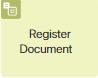
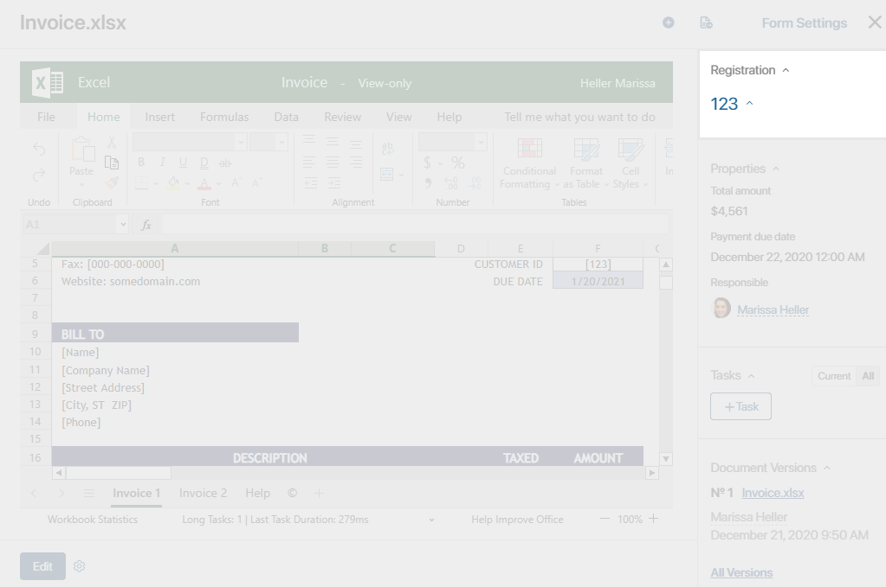
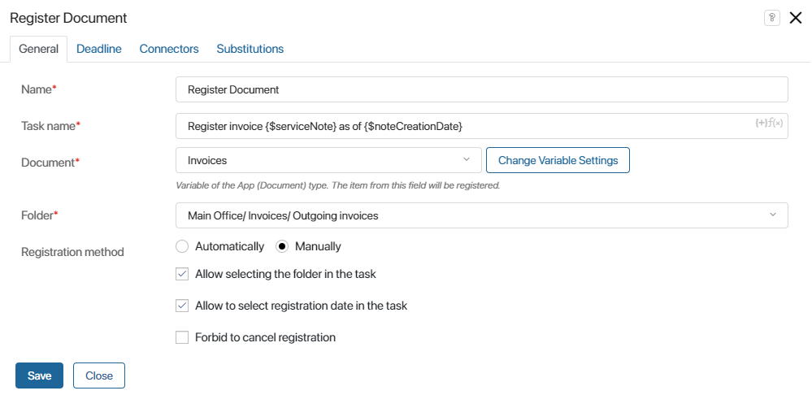
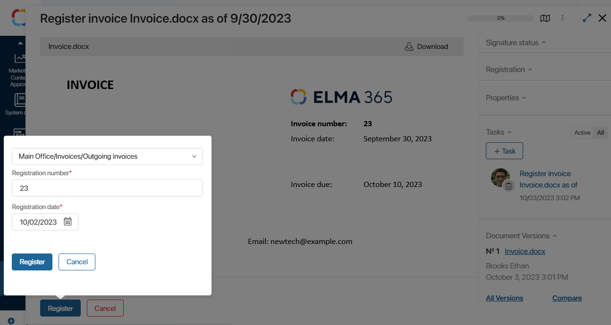
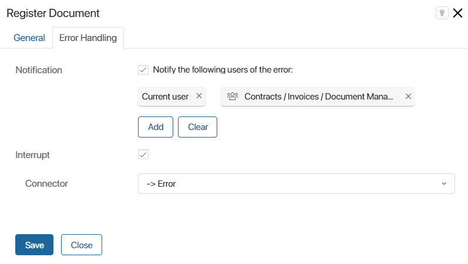

The Register Document activity is used to automatically or manually assign a registration number to a document in the course of a business process. Registration is available only for apps of the Document type.
Let’s take the Invoices app as an example. When registering an invoice, the employee enters all the necessary data into the system: the invoice file, the total amount, the desired payment date, the comment, etc. A new Invoices app item is created.
Then the invoice is either automatically or manually assigned a registration number. The details will be displayed on the invoice page.

Activity settings
Before starting the modeling of a business process, make sure that the document categorization is set up, an office is added, and a folder is configured. Also check the settings of the Document type app for which the process is being created: item registration has to be enabled.
начало внимание
Only users included in the Administrators group can configure registration.
конец внимание
Next, set up the business process. On the process page, on the right-side panel, open the second tab. Drag the Register Document element onto the canvas and place it where you need to assign a registration number to the document during the business process.
Double-click on the added activity to open the settings window. The settings will vary depending on the chosen type of registration:
- Manual registration is configured in the General, Deadline, Schedule in Calendar, and Connectors tabs.
- Automatic registration is set up in the General and Error Handling tabs.
General tab
On this tab, you can choose the registration method and configure the general settings:

- Name*. Specify the name of the activity displayed on the process diagram.
- Task name*. Provide a detailed description of the task. This is what the executor will see in the task list or on its page. You can include context variables in the name by clicking on the {+} icon in the top right corner of the field. Additionally, you can add the DateTime() function to the template by clicking the f(x) icon.
- Document*. Open the dropdown menu and select the variable storing the Document type app that contains the file you need to register. If the variable has not been added to the process context, click the Create New Variable button.
- Folder*. After you specify the Document, you can specify the folder it will be registered in.
- Manually. A task with the document registration form will be assigned to the current executor or group of executors specified in the swimlane. Additional options are available with this method of registration:
- Allow selecting the folder in the task. This option lets the user choose which folder to register the document in when completing the registration task. Please note that it is only possible only specify folders added in the app registration settings. This option is useful if one app stores various types of documents that need to be registered in different folders, like invoices and waybills.
- Allow selecting the registration date in the task. This option lets the user specify the document registration date when completing the task. By default, the current date is set.
- Forbid to cancel registration. If this option is enabled, it will be impossible to cancel registration on the task form. To continue the process, the user will have to choose a folder and register the document.
- Automatically. The document will be automatically registered in the folder you specified in the Folder* field earlier. With this registration method, an additional option is available:
- Use the reserve date for registration. If this option is enabled, the document registration date is replaced with the reservation date for the registration number. Ensure that reservation of the document registration number is allowed in the settings of the selected folder and the app settings.
Deadline tab
When registering a document manually, this tab allows you to set a time limit for task execution. Additionally, you can specify which employees will receive a notification if the set deadline is not met.
These settings can be applied to all Task type activities. Learn more about how to configure them in the Task article.
Schedule in Calendar tab
This tab appears if there’s a set time limit for the manual registration task execution. Here, you can enable the task to be displayed in the executor’s calendar, ensuring it’s completed within the specified deadline. Learn more about how to configure this in the Task article.
Connectors tab
When choosing Manually as the registration method, it’s necessary to use two transitions from the Register Document activity on the process diagram. One will serve as the default transition intended for registration confirmation, and the other for cancellation.
These are set up on the Connectors tab. Here, you can edit the connector names, choose the button colors on the task form, add confirmation text, etc. To access the settings, click on the name of a transition. Learn more about this in the Connectors article.
Substitutions tab
On this tab, you can specify a variable that controls the reassignment of the registration task to an employee who substitutes the main performer.
For example, you can ignore substitution if the document to be registered contains confidential data that should not be shared with third parties.
For more details on how to configure ignoring substitution, see the Task article.
Error Handling tab
This tab appears when Automatically is chosen as the registration method. Here, you can specify which path the process will take in the event of an error, and also select the users who will receive a notification about the error.

After setting all the parameters, click the Save button.
начало внимание
The Register Document activity is not supported in debug mode. To make the process continue in this mode, click the name of the operation in the History section and select Skip step.
конец внимание
Users working with the registration task
As soon as the process comes to the configured activity, the document will be registered in the system using the specified method.
If you selected manual registration, the user specified in the swimlane that the activity is placed in will be assigned the corresponding task. If a group is specified in the swimlane, the registration task will be assigned to all users in the group. As soon as one of them starts working on the task, it disappears from other users’ task pages.
If you have selected automatic registration, the user who executed the task placed before the Register Document activity will be specified as the user who registered the document.
Found a typo? Select it and press Ctrl+Enter to send us feedback